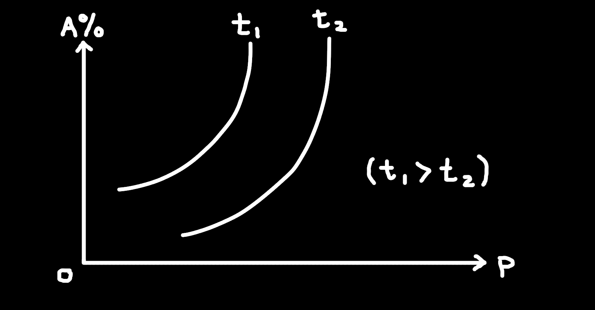

Questions (with solutions!)
NOTE: The solutions are wrote by ChatGPT.
I am aware of the solutions may be bad/confusing (I tried to edit the ones that may be confusing). If you are still confused on any question, feel free to ask someone that's good at the topic (or ask ChatGPT for more clarification lol) or you can just skip the question for now, and come back later.
This also means that the solution MAY be wrong (or I wrote the questions wrong for ChatGPT).
Update: For later questions I changed to using Claude, so it should be more accurate!
1. In the equilibrium:
C(s) + CO₂(g) ⇌ 2CO(g) ΔH = +111 kJ/mol
If C(s) is added, the equilibrium will ___.
A. shift to left
B. shift to right
C. not affected
D. shift to the right then shift to left
Solution:
Solids do not appear in K expressions, so adding C(s) does not change any concentrations.
Answer: C. not affected
2. In: 2CrO₄²⁻(aq) + 2H⁺(aq) ⇌ Cr₂O₇²⁻(aq) + H₂O(l)
The solution is yellow/orange. To make it more reddish‐orange (more Cr₂O₇²⁻), add ___.
A. H⁺
B. OH⁻
C. H₂O
D. Cr³⁺
Solution:
Adding H⁺ drives the equilibrium right, producing more dichromate (reddish‐orange).
Answer: A. H⁺
3. For P + Q ⇌ 3R, with forward rate V₁ and reverse V₂, the equilibrium constant K = ___.
A. K = V₁/V₂
B. K = V₂/V₁
C. K = k₁/k₂
D. K = k₂/k₁
Solution:
K = (forward rate constant)/(reverse rate constant) = k₁/k₂. Since V₁ ∝ k₁ and V₂ ∝ k₂ at equilibrium, K = V₁/V₂.
Answer: A. K = V₁/V₂
4. A(g) + 3B(g) ⇌ 2C(g) + 91.96 kJ
What shifts equilibrium left?
A. Add catalyst
B. Increase temperature
C. Increase temperature and decrease pressure
D. Decrease temperature and increase pressure
Solution:
Forward is exothermic. Raising T shifts left; lowering P (more moles left) also shifts left.
Answer: C. Increase temperature and decrease pressure
5. H₂(g) + I₂(g) ⇌ 2HI(g), K = 60 at 450 °C.
If initial moles are [H₂]=2, [I₂]=0.41 (in 1 L), find [HI] at equilibrium.
A. \(75\)
B. \(49.2\)
C. \(7.0\)
D. \(0.12\)
Solution:
At equilibrium, let \([\mathrm{HI}] = x\). Construct ICE table:
| \([\mathrm{H_2}]\) | \([\mathrm{I_2}]\) | \([\mathrm{HI}]\) | |
|---|---|---|---|
| Initial conc/\(molL^{-1}\) | \(2.00\) | \(0.41\) | \(0\) |
| Change in conc/\(molL^{-1}\) | \(-\tfrac{x}{2}\) | \(-\tfrac{x}{2}\) | \(+x\) |
| Equilibrium conc/\(molL^{-1}\) | \(2.00 - \tfrac{x}{2}\) | \(0.41 - \tfrac{x}{2}\) | \(x\) |
Equilibrium expression: \[ K_c = \frac{[\mathrm{HI}]^2}{[\mathrm{H_2}]\,[\mathrm{I_2}]} \] \[ 60 = \frac{x^2}{\bigl(2.00 - \tfrac{x}{2}\bigr)\,\bigl(0.41 - \tfrac{x}{2}\bigr)} \] Solve for \(x\) (e.g. by rearranging to a quadratic and using the positive root) to find \[ x \approx 7.0. \] Answer: C. \(7.0\)
6. 2X + Y ⇌ 2Z. Y is gas. Lowering pressure shifts equilibrium forward. Which must be true?
A. X and Z are solids
B. X, Y, Z are gases
C. X is gas and Z is solid
D. X is solid and Z is gas
Solution:
Forward makes more gas moles only if products have more gas than reactants. Reactants gas moles = 1 (Y). Products gas = 2 (2Z). So Z is gas, X must be solid.
Answer: D. X is solid and Z is gas
7. When the reaction
aA(g) + bB(g) ⇌ cC(g) + dD(g)
the relationships between the percentage of A (A%) in the reacting mixture, the pressure (p) and the temperature (t) are shown in the figure, from which we can come to the correct conclusion that the forward reaction is ___?

A. Forward reaction is endothermic, a + b < c + d
B. Forward reaction is endothermic, a + b > c + d
C. Forward reaction is exothermic, a + b < c + d
D. Forward reaction is exothermic, a + b > c + d
Solution:
1. At higher T (t₁) the equilibrium shifts toward products (A % ↓), so the forward reaction is endothermic.
2. As pressure ↑, A % ↓ (forward favored), so forward produces fewer gas moles → a + b > c + d.
Answer: B. Forward reaction is endothermic, a + b > c + d
8. Which of the following equilibrium will not be affected by a change in volume?
A. 2 NO₂(g) ⇌ N₂O₄(g)
B. H₂(g) + Cl₂(g) ⇌ 2 HCl(g)
C. NH₄NO₃(s) ⇌ N₂O(g) + 2 H₂O(g)
D. CH₃CH₂OH(g) ⇌ CH₂=CH₂(g) + H₂O(g)
Solution:
Count gaseous moles on each side:
A: 2 ⇌ 1 → affected
B: 2 ⇌ 2 → not affected
C: 0 ⇌ 3 → affected (solid doesnt count)
D: 1 ⇌ 2 → affected
Answer: B. H₂(g) + Cl₂(g) ⇌ 2 HCl(g)
9. Which statement about a chemical equilibrium is correct?
A. Both the forward and reverse reactions stop at equilibrium
B. The concentrations of reactants become zero
C. The rate of the forward reaction equals the rate of the reverse reaction
D. A change in conditions cannot shift the equilibrium position
Solution:
At equilibrium the reaction continues but forward rate = reverse rate, and changing conditions does shift it.
Answer: C. The rate of the forward reaction equals the rate of the reverse reaction
10. The purpose of adding a catalyst to a reversible reaction is to:
A. Shift the equilibrium toward products
B. Change the equilibrium composition
C. Shorten the time to reach equilibrium
D. Change the reaction enthalpy ΔH
Solution:
A catalyst speeds both forward and reverse equally, so it only makes equilibrium occur faster.
Answer: C. Shorten the time to reach equilibrium
11. Which statement about activation energy is incorrect?
A. Activation energy changes with temperature
B. Forward and reverse activation energies differ
C. Activation energy is used to break reactant bonds
D. Generally, larger activation energy → slower reaction
Solution:
Activation energy is a fixed barrier (does not change with T), but forward/reverse values differ and higher \(E_a\) slows rate.
Answer: A. Activation energy changes with temperature
12. Which change will certainly increase the amount of products at equilibrium?
A. Adding a catalyst
B. Increasing the pressure
C. Increasing the temperature
D. Increasing the concentration of reactants
Solution:
Only changing reactant concentration directly shifts equilibrium toward products (in absence of other specifics).
Answer: D. Increasing the concentration of reactants
13.
Which of the following description about the reversible reaction is/are correct?
\[ 2\,\mathrm{SO_{2(g)}} + \mathrm{O_{2(g)}} \;\rightleftharpoons\; 2\,\mathrm{SO_{3(g)}}, \] where a catalyst is used only in the forward direction, which statements are correct?
I. Reacting 2 mol of SO₂ with excess O₂ can yield 2 mol of SO₃.
II. At equilibrium, the rate of consumption of SO₂ equals twice the rate of consumption of O₂.
III. At equilibrium, \([\mathrm{SO_2}]:[\mathrm{O_2}]:[\mathrm{SO_3}] = 2:1:2\).
A. I
B. II
C. I III
D. II III
Solution:
I. False — because the reaction is reversible, you generally cannot convert 100% to SO₃.
II. True — stoichiometry dictates \(\;r_{\mathrm{SO_2}} = 2\,r_{\mathrm{O_2}}\).
III. False — equilibrium concentrations depend on K, not simply stoichiometric ratio.
Answer: B. II
14. Which equilibrium will move forward when temperature decreases and pressure increases?
A. \(\mathrm{H_{2(g)}} + \mathrm{I_{2(g)}} \;\rightleftharpoons\; 2\,\mathrm{HI_{(g)}} + Q\)
B. \(\mathrm{N_{2(g)}} + 3\,\mathrm{H_{2(g)}} \;\rightleftharpoons\; 2\,\mathrm{NH_{3(g)}} + Q\)
C. \(\mathrm{N_{2}O_{4(g)}} \;\rightleftharpoons\; 2\,\mathrm{NO_{2(g)}} - Q\)
D. \(\mathrm{C(s)} + \mathrm{H_{2}O_{(g)}} \;\rightleftharpoons\; \mathrm{CO_{(g)}} + \mathrm{H_{2(g)}} - Q\)
Solution:
Need exothermic forward (favored by ↓T) and fewer gas moles forward (favored by ↑P).
A: equal gas moles (no P effect).
B: forward exothermic and 4→2 moles (↓T and ↑P both favor forward).
C,D are endothermic forward or increase moles. Answer: B. \(\mathrm{N_{2(g)}} + 3\,\mathrm{H_{2(g)}} \;\rightleftharpoons\; 2\,\mathrm{NH_{3(g)}} + Q\)
15. A nitrogen-hydrogen mixture (1:3 mole ratio) reaches equilibrium to form NH₃ when half the N₂ has reacted. If total pressure then is \(P\), what is the partial pressure of NH₃?
A. \(\frac{P}{3}\) B. \(\frac{P}{4}\) C. \(\frac{P}{6}\) D. \(\frac{P}{8}\)
Solution:
Initial moles: N₂=1, H₂=3.
Extent: 50% of N₂ reacted → reacted N₂=0.5 → H₂ consumed=1.5 → NH₃ produced=2×0.5=1.
Remaining: N₂=0.5, H₂=1.5, NH₃=1 → total 3 moles.
\(p_{\rm NH_3} = \frac{1}{3}P\).
Answer: A. \(\frac{P}{3}\)
16. In a 1 L vessel at 320 K:
3 mol PCl₅(g) ⇌ 1 mol PCl₃(g) + Cl₂(g). If \(K_c = 0.50\), how many moles of PCl₅ remain at equilibrium?
A. 2.314 B. 2.175 C. 0.825 D. 0.626
Solution:
Let \(x\) = moles of PCl₅ dissociated at equilibrium.
| PCl₅ | PCl₃ | Cl₂ | |
|---|---|---|---|
| Initial conc/\(molL^{-1}\) | 3.00 | 1.00 | 0.00 |
| Change in conc/\(molL^{-1}\) | –x | +x | +x |
| Equilibrium conc/\(molL^{-1}\) | \(3.00 - x\) | \(1.00 + x\) | \(0 + x\) |
Equilibrium expression: \[ K_c = \frac{[\mathrm{PCl_3}]\,[\mathrm{Cl_2}]}{[\mathrm{PCl_5}]} \] \[ = \frac{(1 + x)\,(x)}{(3 - x)} \] \[ = 0.50. \] Solve for \(x\): \[ (1 + x)\,x = 0.5\,(3 - x) \] \[ x^2 + x = 1.5 - 0.5x \] \[ x^2 + 1.5x - 1.5 = 0. \] Use the positive root: \[ x = \frac{-1.5 + \sqrt{1.5^2 + 6}}{2} \] \[ \approx 0.686. \] Moles of PCl₅ remaining: \[ 3.00 - 0.686 = 2.314. \] Answer: A. 2.314
17. For 2SO₂(g) + O₂(g) ⇌ 2SO₃(g) + Q, which methods increase percent conversion of SO₂?
I. Increase temperature
II. Decrease temperature
III. Increase pressure
IV. Decrease pressure
A. I III
B. I IV
C. II III
D. II IV
Solution:
Reaction is exothermic forward; more gas moles → left. To increase SO₃ (i.e. conversion of SO₂) you want forward favored: • Lower T (II) favors exothermic forward.
• Higher P (III) favors fewer moles (right).
Answer: C. II III
18. By lowering the temperature and increasing the pressure, which equilibrium shifts toward products (forward)?
A. 2 HCl(g) ⇌ H₂(g) + Cl₂(g) - Q
B. 2 SO₃(g) ⇌ 2 SO₂(g) + O₂(g) - Q
C. CaO(s) + CO₂(g) ⇌ CaCO₃(s) + Q
D. CO(g) + H₂O(g) ⇌ CO₂(g) + H₂(g) + Q
Solution:
We need forward exothermic (↓T favors) and fewer gas moles forward (↑P favors):
A: forward moles 2→2 (no pressure effect).
B: forward is endothermic (–Q = heat absorbed).
C: forward exothermic (+Q) and gas moles 1→0 → fits.
D: forward exothermic but gas moles 2→2 (no pressure effect).
Answer: C. CaO(s) + CO₂(g) ⇌ CaCO₃(s) + Q
19. For X(g) ⇌ Y(g) + Z(g) at constant total pressure P,
the equilibrium partial pressure of X is \(p_X = \tfrac{1}{7}P\). What is \(K_p\)?
A. \(\tfrac{6}{7}P\)
B. \(\tfrac{9}{7}P\)
C. \(\tfrac{18}{7}P\)
D. \(\tfrac{36}{7}P\)
Solution:
Since px = \(\frac{1}{7}P\) and total pressure is P:
py + pz + px = P
py + pz = P - \(\frac{1}{7}P\) = \(\frac{6}{7}P\)
Y and Z are produced in equal amounts (because both their coefficient is 1), so py = pz = \(\frac{3}{7}P\)
Therefore: Kp = \(\frac{p_y \times p_z}{p_x}\) = \(\frac{\frac{3}{7}P \times \frac{3}{7}P}{\frac{1}{7}P}\) = \(\frac{9}{7}P\)
Answer: B. \(\tfrac{9}{7}P\)
20. N₂ and H₂ mixed 1:3 reach equilibrium NH₃ with mole fraction NH₃ = 40%.
What is mole fraction of N₂?
A. 15% B. 20% C. 40% D. 60%
Solution:
| N₂ | H₂ | NH₃ | Total | |
|---|---|---|---|---|
| Initial conc/\(molL^{-1}\) | 1.00 | 3.00 | 0.00 | 4.00 |
| Change in conc/\(molL^{-1}\) | –x | –3x | +2x | –2x |
| Equilibrium conc/\(molL^{-1}\) | 1.00 – x | 3.00 – 3x | 2x | 4.00 – 2x |
Mole fraction NH₃ = \(\tfrac{2x}{4 - 2x} = 0.40\).
We can then calculate that x = 0.5714.
\[ n_{\mathrm{N_2}} = 1 - x \] \[ = 0.4286 \]
\[ n_{\rm tot} = 4 - 2x \] \[ = 2.8572 \]
\[ \text{Mole fraction of N}_2 = \frac{0.4286}{2.8572} \approx 0.15 \] Answer: A. 15%
21. 2 NO₂(g) ⇌ 2 NO(g) + O₂(g). Degree dissociation of NO₂ is 25% from 3 mol initial.
What is \(K_c\)?
A. 0.0417 B. 0.375 C. 2.667 D. 24
Solution:
Initial NO₂ = 3 → reacted = 0.75 → [NO₂]ₑq = 2.25, [NO] = 0.75, [O₂] = 0.375 (in same volume).
\[ K_c = \frac{[NO]^2\,[O₂]}{[NO₂]^2} \] \[ = \frac{0.75^2 \times 0.375}{2.25^2} \] \[ = \frac{0.5625 \times 0.375}{5.0625} \] \[ = 0.0417. \] Answer: A. 0.0417
22. Which reaction has \(K_c = \tfrac{[C]^3\,[D]}{[A]^2\,[B]}\)?
A. 3 C + 2 A → D + B
B. 2 A + B → 3 C + D
C. 3 C + D → 2 A + B
D. C + 3 D → A + 2 B
Solution:
Write the forward reaction such that products have C³D¹ and reactants A²B¹: that is
\[ 2A + B \rightleftharpoons 3C + D. \] Answer: B. 2 A + B → 3 C + D
23. NH₄Cl(s) ⇌ NH₄⁺(aq) + Cl⁻(aq) ΔH = +3.5 kcal/mol
Which change shifts equilibrium to the right?
A. Decrease T to 15 °C
B. Increase T to 35 °C
C. Dissolve NaCl(s) in the mixture
D. Dissolve CH₃COONH₄(s) in the mixture
Solution:
The forward reaction is endothermic (ΔH > 0). Raising T favors the endothermic direction (right). Adding NaCl or NH₄OAc adds common ions, shifting left.
Answer: B. Increase the temperature to 35 °C
24. 2 NO₂(g) ⇌ N₂O₄(g) ΔH = –57 kJ/mol
Which changes shift equilibrium to the right?
I. Increase pressure
II. Decrease temperature
III. Increase volume
IV. Remove some N₂O₄(g)
A. I only B. I & II & III C. I & II & IV D. II & III & IV
Solution:
Right side has fewer moles (1 vs. 2) → ↑P favors right, ↓T favors exothermic forward. Removing product drives forward. Increasing volume (↓P) opposes forward. Answer: C. I, II, IV
25. 3 P(g) + Q(g) ⇌ x R(g) + 2 S(g)
Start: [P]₀ = 2.0 M, [Q]₀ = 2.0 M, [R]₀ = 0, [S]₀ = 0 in a 1 L vessel.
At equilibrium: [S]eq = 0.80 M, [R]eq = 0.40 M.
Which statement is correct?
A. x = 2
B. Conversion of P is 60%
C. [P]eq = 0.6 \(molL^{-1}\)
D. [Q]eq = 0.2 \(molL^{-1}\)
Solution:
| [P] | [Q] | [R] | [S] | |
|---|---|---|---|---|
| Initial conc/\(molL^{-1}\) | 2.0 | 2.0 | 0 | 0 |
| Change in conc/\(molL^{-1}\) | –3y | –y | +xy | +2y |
| Equilibrium conc/\(molL^{-1}\) | 2.0 – 3y | 2.0 – y | xy | 2y |
Here we see [S]eq = 2y = 0.80 → y = 0.40.
Then [R]eq = xy = 0.40 → x = 1.
So x (the stoichiometric coefficient of R) = 1.
[P]eq = 2.0 – 3(0.40) = \(0.8molL^{-1}\)
Change of P concentration = \(1.2molL^{-1}\)
Conversion of P = \(\frac{1.2}{2.0}\) = 60%.
Answer: B. Conversion of P is 60%
26. 2 NO₂(g) ⇌ 2 NO(g) + O₂(g)
Start: 5 mol NO₂ in 2 L. At equilibrium O₂ = 1 mol total. Find K_c.
A. \(\dfrac{2^2\times1}{0.5^2}\) B. \(\dfrac{2^2\times1}{5^2}\) C. \(\dfrac{1^2\times0.5}{1.5^2}\) D. \(\dfrac{1^2\times0.5}{1.5^2}\)
Solution:
| [NO₂] | [NO] | [O₂] | |
|---|---|---|---|
| Initial conc/\(molL^{-1}\) | 2.50 | 0.00 | 0.00 |
| Change in conc/\(molL^{-1}\) | –2x | +2x | +x |
| Equilibrium conc/\(molL^{-1}\) | 2.50 – 2x | 0 + 2x | 0 + x |
We know [O₂]ₑq = x = 0.50, so:
– 2x = –1.00 → [NO₂]ₑq = 2.50 – 1.00 = 1.50
2x = 1.00 → [NO]ₑq = 1.00
Then:
\[ K_c = \frac{[NO]^2\,[O_2]}{[NO_2]^2} = \frac{(1.00)^2 \times 0.50}{(1.50)^2} \] Answer: C. \(\displaystyle \frac{1.0^2 \times 0.5}{1.5^2}\)
27. When a reversible reaction at equilibrium shifts forward under new conditions, which are true?
I. Product yield increases
II. Reactant concentrations decrease
III. Conversion rate of reactants decreases
IV. Forward rate > reverse rate
A. I & II
B. I & IV
C. II & III
D. III & IV
Solution:
Shifting forward → more products (I), fewer reactants (II), the system momentarily has forward > reverse rate until new eq (IV true). Conversion rate speaking of fraction increases, not decreases—III false.
Answer: B. I & IV